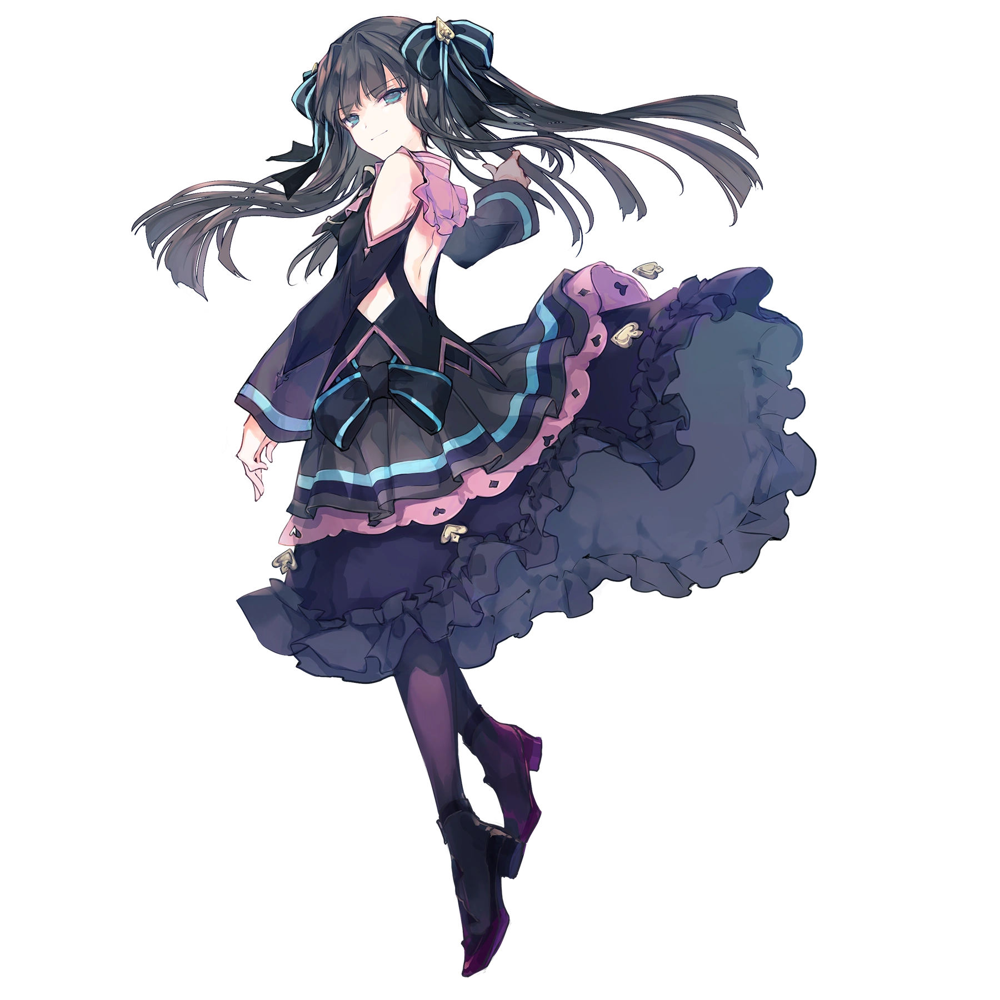

Light
They say that this is true: anything in excess is a poison. She either didn’t know, or hadn’t cared. The girl now walks past what seemed to have been an old concert hall, the impact of its grandness dulled as it had been split perfectly in twain, as if some higher power had willed it so. Out of the tomb of sound drift memories again: of dances, of performance, hopes, victories. Her mouth twitches. Has it simply become boring, or is this something else? She lifts her hands and the Arcaea come to her, gently weaving over her palms and through her fingers. Blankly she notes them. How many times has she seen the last hurrah of a retiring band? How many times has she seen two brothers embrace? Too many times she’s seen the formation of a love, so frequent it was apparently standard in old and forgotten worlds. She lets the memories go, and genuinely thinks nothing of it. They rise. They fly to join with the memories she’s still been gathering, and she looks at their destination now. It’s grown much brighter since she began her collecting. It seems to grow brighter every day... How many days has it even been? She winces, and a grimace twists onto her face. She shakes it away. Maybe she only needs more, then whatever is missing will be found. She calms herself and carries on, not letting it bother her that no matter what, she cannot push the Arcaea following her away.